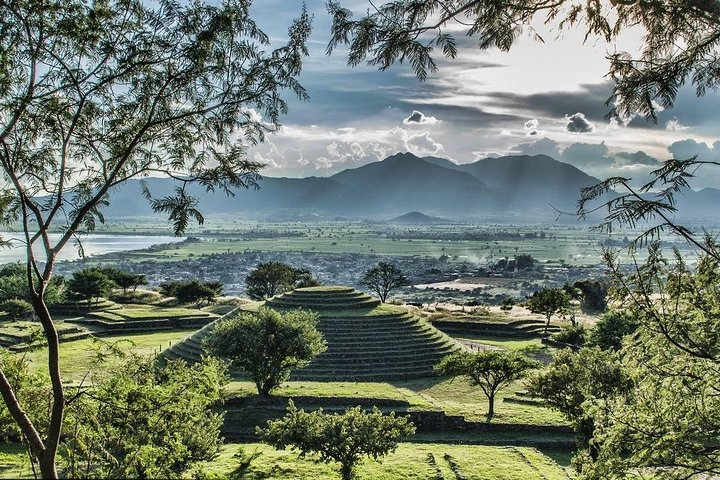

Possible additional Special Events include:
Guadalajara is a city whose name means “Stone Valley” is picturesque wherever you see it. The streets reflect a Mexico full of mariachi, tequila and traditions. Its downtown hosts beautiful temples, monuments and plazas where you can comfortably go for a walk.
The Perla de Occidente (West Pearl) possess exceptional beauty. Just visit Plaza de Armas and you will see. This space has a beautiful kiosk representing the four seasons of the year and its architecture will remind you of the Art Noveau style. If you are lucky, you will find the traditional mariachi playing Mexican music there.
The Magical Town of
Tequila is located in the state of Jalisco, one hour from Guadalajara. If you want to enjoy a good shot of tequila, one of the country's iconic drinks, this is the perfect place to do it. Mexico is worldwide recognized for this iconic drink and here in Tequila is where the best samples are made.
If there were a contest to find the capital of the crafts in Mexico, surely
Tonalá would be fighting for one of the first places. This municipality, located in the metropolitan area of Guadalajara, has been molded in the potter's ovens and the clay of its lands that have brought it to the international fame.

Near El Arenal and on one side of the Tequila volcano is the
Zona Arqueológica Teuchitlán o “Guachimontones” (Archaeological Site of Teuchitlán or “Guachimontones”) a local-colloquial word used for a structure or pyramid.
These constructions are unique in the world, since they had circular bases and were made in honor of Ehécatl, god of the wind. Within the archaeological zone there are three rounded and stepped pyramids built with basalt stone, volcanic tuff and mud. In addition, the site has a ball court, an amphitheater, patios and terraces.
The Ribera de Chapala is located 40 minutes away from the city of Guadalajara, in the state of Jalisco. It is famous for having the largest lake in the country and an enviable semi-tropical climate most of the year, which has been appointed “one of the best climates in the world”.If you wonder what to do in Chapala, we can tell you that it is the ideal place to forget about the routine, with options for all tastes. Walk along the boardwalk, admire the colonial style of its streets and historic center, while savoring a traditional “nieve de garrafa” (sherbert/icecream made in a wooden bucket). Practice fishing and water sports, relax in hot springs and of course enjoy delicious meals. An unforgettable trip awaits you in this natural paradise.